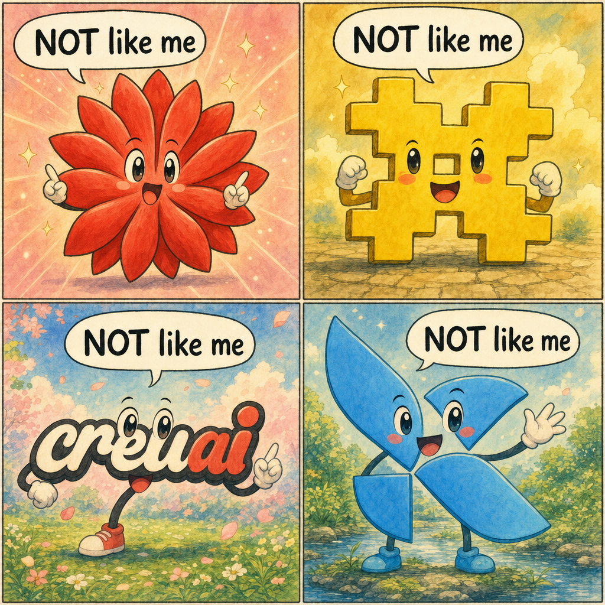

FAQ — It Is Not What You Already Know

Before your gut reaches for the obvious comparisons, here is why each of them is wrong.
THE HIVE DOES INFERENCE ONLY. IT DOES NOT TRAIN ANY MODEL. Every comparison that involves training — federated learning, distributed training, multi-machine training — is irrelevant. The hive runs already-trained models. Nothing more.
It is NOT PETALS / EXO / SPLIT-MODEL FRAMEWORKS. Those use tensor parallelism or pipeline parallelism to split one model across a few machines that must sit in the same room with low-latency networking. THE HIVE uses task parallelism — each worker runs a complete independent model on its own — and operates across continents.
It is NOT LANGCHAIN / CREWAI / AUTOGEN — AND IT IS NOT AN AGENT FRAMEWORK, NOT "AGENTIC AI." Those run on a single machine and chain tools or "agents" together inside one process or one box. THE HIVE is millions of separate physical machines, each running a complete model on its own hardware, coordinated by queens.
It is NOT MANY PROCESSES ON ONE MACHINE COMPETING FOR THE SAME CPU / GPU / RAM. Every worker is a separate physical computer with its own CPU, GPU, RAM, disk, and network connection. There is no resource contention because the resources are not shared.
It is NOT A BIG AI CLOUD WITH A THIN CLIENT. There is no central datacenter, no central operator, no central choke point, no entity that can pull the plug.
It is NOT A PAPER. It is working open-source code on GitHub today. The book MadHoney documents how it was built and how it was tested in dedicated chapters.
If you suspect this is something you have already seen, please ask your favorite frontier cloud AI assistant to read the GitHub repositories linked at the bottom of this letter and ask it directly: "Is this anything like Petals, LangChain, agent frameworks, or any other distributed-AI work I already know — or is it something new?" In five minutes it will tell you it is new.
📖 The Distributed AI Revolution — Chapter 15: The Octopus Is Slippery (Extended FAQ)
📖 The Distributed AI Revolution — Chapter 8: The Proof — We Actually Did It